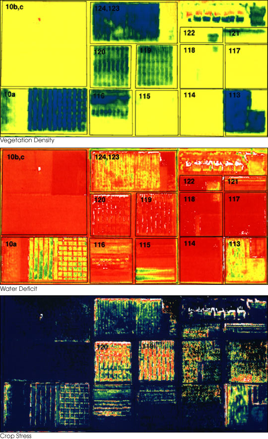
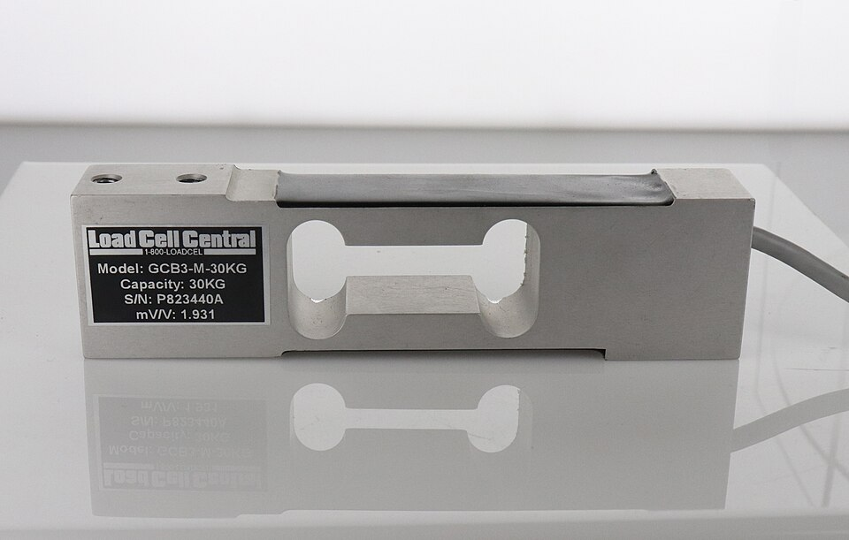
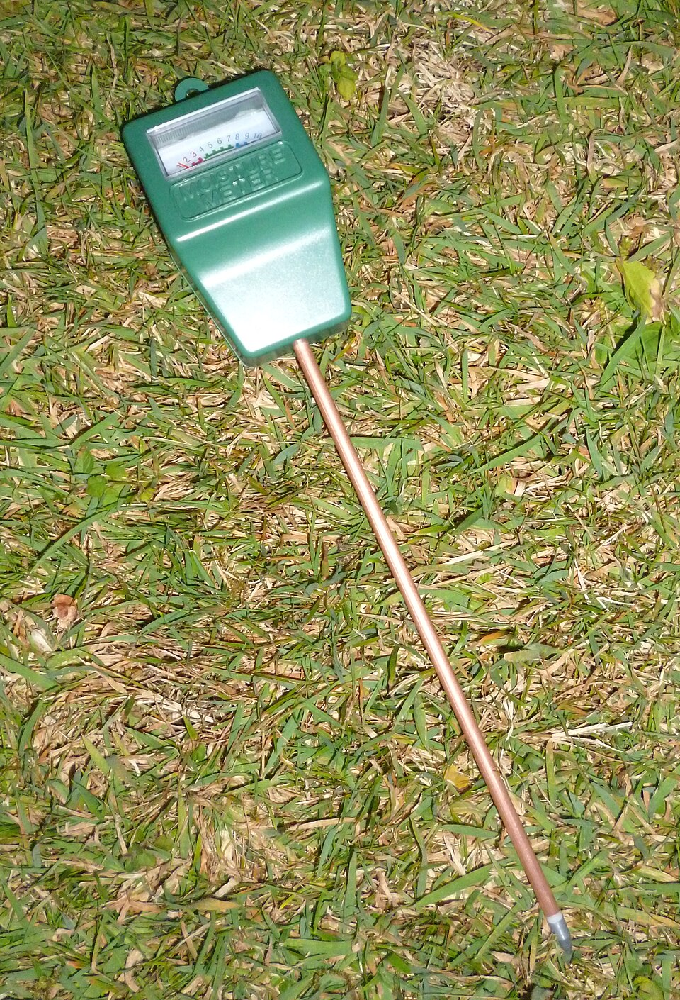
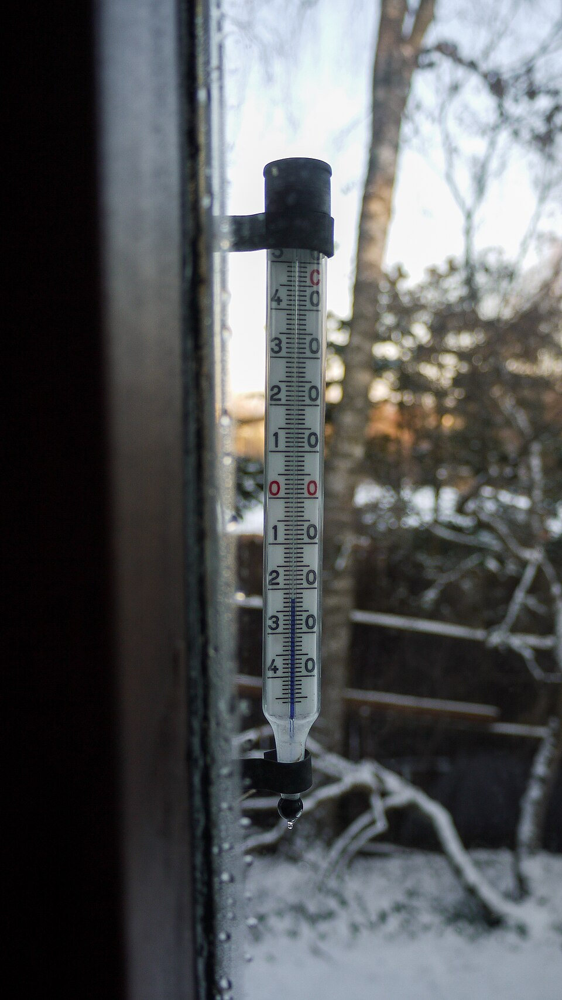
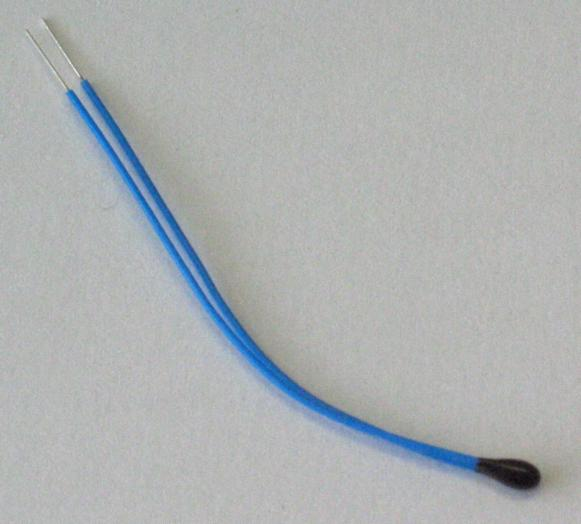
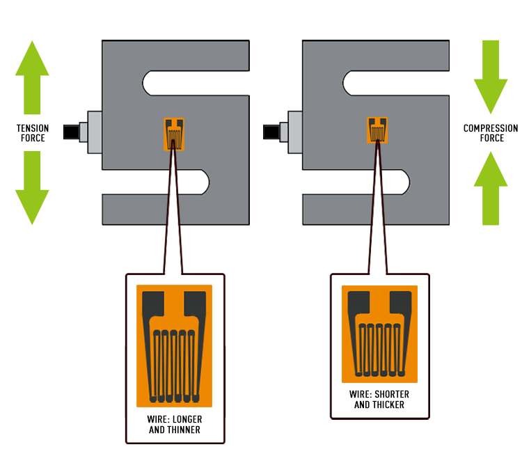
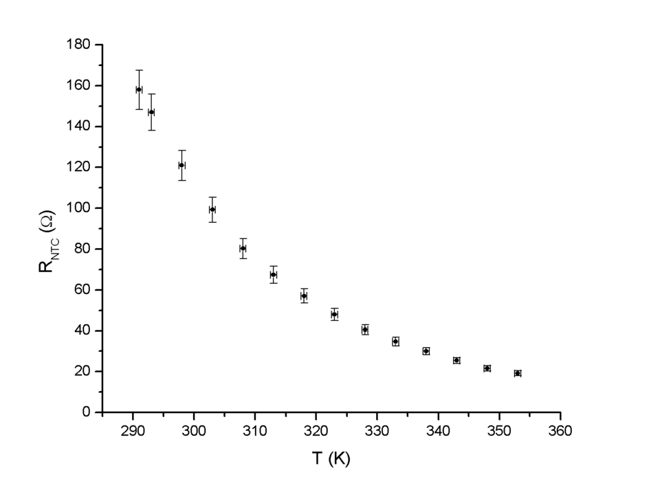
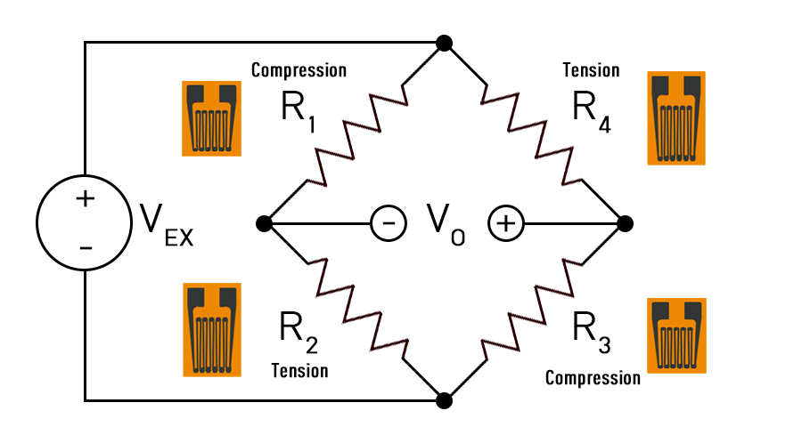

เครื่องมือวัดและวงจรพื้นฐาน
เครื่องมือวัดทำอะไร ประกอบด้วยขั้นตอนใดบ้าง และวงจรไฟฟ้าพื้นฐานที่ใช้แปลงค่าจากเซนเซอร์ให้เป็นแรงดัน
เมื่อจบบทนี้ ผู้เรียนควรสามารถ
- อธิบายบทบาทของเครื่องมือวัดในเกษตรแม่นยำ
- แยกองค์ประกอบของเครื่องมือวัดออกเป็น Sensor, Transducer, Signal Conditioning และ Output ตามหน้าที่
- อธิบายความหมายของการสอบเทียบ (calibration)
- ใช้กฎของโอห์มและกฎของ Kirchhoff วิเคราะห์วงจรอนุกรม ขนาน วงจรแบ่งแรงดัน และ Wheatstone bridge
1.1เครื่องมือวัดคืออะไร
มนุษย์รับรู้โลกผ่านประสาทสัมผัส — การมองเห็น การได้ยิน การสัมผัส กลิ่น รส อุณหภูมิ และการเคลื่อนไหว เซนเซอร์ในอุปกรณ์รอบตัวทำหน้าที่เดียวกันนี้ให้กับเครื่องจักร
| อุปกรณ์ | เซนเซอร์ที่อยู่ภายใน |
|---|---|
| ไมโครโฟน | เซนเซอร์ความดัน (คลื่นเสียง) |
| เครื่องปรับอากาศ | อุณหภูมิ ความชื้นสัมพัทธ์ อินฟราเรด |
| โทรศัพท์มือถือ | IMU (ความเร่ง/การหมุน) กล้อง แสงรอบข้าง |
| นาฬิกาอัจฉริยะ | เซนเซอร์แสงวัดอัตราการเต้นของหัวใจ |
บทบาทหลักของเครื่องมือวัดมี 3 ประการ คือ การเฝ้าติดตาม (monitoring), การควบคุม (control) และ การวิเคราะห์พฤติกรรม (behavioural analysis)
เครื่องมือวัดในเกษตรแม่นยำ
งานเกษตรต้องวัดสมบัติของดิน สุขภาพพืช การใช้น้ำ ผลผลิต และผลตอบแทนทางเศรษฐกิจอย่างแม่นยำ ทั้งในงานพืช ปศุสัตว์ และสัตว์น้ำ
ความแปรปรวนในแปลงมีทั้งเชิงพื้นที่และเชิงเวลา จึงต้องมีเครื่องมือที่วัดทั้งตำแหน่งและตัวแปรในแปลง ผลผลิตเป็นฟังก์ชันของปัจจัยการผลิตและตัวแปรสิ่งแวดล้อม (ชื่อเรียกอื่น: precision farming, farming by the inch, site-specific farming, prescription farming)

{kind=link}
1.2ระบบการวัดทั่วไป
เครื่องมือวัดทุกชนิดอธิบายได้ด้วยลำดับขั้นเดียวกัน (Figliola & Beasley, 2011)[2]
- Sensor
- รับรู้ปรากฏการณ์ทางกายภาพและสร้างสัญญาณออกมา เช่น อุณหภูมิ ความชื้นสัมพัทธ์ ความชื้นดิน แสง น้ำหนัก pH/EC และออกซิเจนละลายน้ำ (DO)
- Transducer
- แปลงสิ่งที่เซนเซอร์ตรวจจับให้เป็นสัญญาณไฟฟ้าที่อ่านได้ บ่อยครั้ง sensor และ transducer เป็นอุปกรณ์ชิ้นเดียวกัน เช่น
- Capacitive soil moisture: การเปลี่ยนแปลงของ C → แรงดัน
- Load cell: แรง → การเปลี่ยนแปลงความต้านทาน → สัญญาณระดับ mV
- pH probe: ประจุ H+ → mV
- Signal Conditioning
- ทำให้สัญญาณเหมาะกับไมโครคอนโทรลเลอร์ (Arduino/ESP32) — ขยายสัญญาณ (ไมโครโฟน, load cell) กรองสัญญาณรบกวน และปรับช่วงให้อยู่ใน 0–3.3 V หรือ 0–5 V (รายละเอียดในบทที่ 2)
- Output
- สิ่งที่คนหรือระบบอ่าน เช่น จอแสดงตัวเลข Serial Monitor กราฟบน IoT dashboard หรือการแจ้งเตือน

{kind=link}

{kind=link}
ตัวอย่างการไหลของข้อมูลในโครงงาน: เซนเซอร์ความชื้นดิน → แรงดัน → ADC → cloud → dashboard
1.3ตัวอย่าง: เทอร์โมมิเตอร์สองแบบ
เปรียบเทียบเทอร์โมมิเตอร์แก้ว (เชิงกลล้วน) กับ thermistor ที่ต่อกับไมโครคอนโทรลเลอร์ (เชิงไฟฟ้า) สังเกตปริมาณทางกายภาพที่ส่งต่อระหว่างขั้น
| ขั้น | เทอร์โมมิเตอร์แก้ว | Thermistor + MCU |
|---|---|---|
| ตัวแปร / หน่วย | อุณหภูมิ T (°C) | อุณหภูมิ T (°C) |
| Sensor | ของเหลวในกระเปาะ: T → ΔV (ปริมาตรขยายตัว) | Thermistor: T → R |
| Transducer | กระเปาะ + หลอดแก้ว: ΔV → ΔL (ความยาวลำของเหลว) | วงจรแบ่งแรงดันหรือ bridge: R → แรงดัน |
| Signal conditioning | ขนาดรูหลอดแก้ว (bore) กำหนด “อัตราขยาย” — รูยิ่งเล็ก ΔL ยิ่งมาก | Op-amp ขยายและกรอง แล้ว ADC แปลงเป็นตัวเลข |
| Output | สเกลบนหลอดแก้ว | จอแสดงผล / Serial Monitor / dashboard |

.jpg){kind=link}

{kind=link}
- แยกขั้นตามหน้าที่ ไม่ใช่ตามชิ้นส่วน — ชิ้นส่วนเดียวอาจทำหลายหน้าที่ เช่น หลอดแก้วเป็นทั้ง transducer (ΔV → ΔL) และ signal conditioner (รูแคบ = gain สูง)
- เครื่องมือเชิงกลอาจไม่มีการปรับสภาพสัญญาณทางไฟฟ้าเลย การขยายเกิดขึ้นทางกล
- ถามเสมอว่า “อะไรเข้า อะไรออก” ในแต่ละขั้น และเขียนเป็นปริมาณทางกายภาพ
1.4การสอบเทียบ (Calibration)
การสอบเทียบคือการหาความสัมพันธ์ระหว่างค่าที่ทราบ (known) กับค่าที่วัดได้ (measured) โดยค่าที่ทราบได้จากเครื่องมือที่แม่นยำกว่า เรียกว่า standard หรือ calibrator
เปรียบเหมือนการ “สอน” เครื่องมือให้อ่านค่าได้ถูกต้องขึ้น ผลลัพธ์คือ calibration curve ที่ใช้แปลงค่าที่เครื่องอ่านได้ไปเป็นค่าจริง เช่น สมการเชิงเส้น y = m·x + c ซึ่งจะใช้จริงใน Lab 4 (ADC ของ ESP32) และ Lab 6 (strain gauge / pressure)
1.5ปริมาณไฟฟ้าพื้นฐาน
| ปริมาณ | นิยาม | หน่วย |
|---|---|---|
| ประจุ q | 1 C = 6.24 × 1018 ประจุมูลฐาน | คูลอมบ์ (C) |
| กระแส i | i = dq/dt | C/s = แอมแปร์ (A) |
| แรงดัน V | V = dW/dq — พลังงานที่ผลักประจุผ่านอุปกรณ์ | J/C = โวลต์ (V) |
| กำลัง P | P = dW/dt = Vi = i2R = V2/R | วัตต์ (W) |
หมายเหตุ: ทิศกระแสตามแบบแผน (conventional current) ไหลจากขั้วบวกไปขั้วลบ ตรงข้ามกับทิศการไหลของอิเล็กตรอน
ตัวต้านทาน (Resistor)
จำกัดการไหลของกระแส ความต้านทาน R มีหน่วยเป็นโอห์ม (Ω)
ρ = สภาพต้านทาน (ขึ้นกับวัสดุและสภาพแวดล้อม เช่น อุณหภูมิ), L = ความยาว, A = พื้นที่หน้าตัด — นี่คือหลักการของ strain gauge: เมื่อถูกดึง L เพิ่มและ A ลด ทำให้ R เพิ่ม

{kind=link}
ตัวเก็บประจุ (Capacitor)
เก็บประจุ ความจุ C มีหน่วยเป็นฟารัด (F)
ε = สภาพยอมของไดอิเล็กตริก, A = พื้นที่แผ่น, d = ระยะห่างแผ่น — เซนเซอร์ความชื้นดินแบบ capacitive อาศัยการที่น้ำในดินเปลี่ยนค่า ε
ตัวเหนี่ยวนำ (Inductor)
สร้างสนามแม่เหล็กที่ต้านการเปลี่ยนแปลงของกระแส
L = ความเหนี่ยวนำ (H), φ = ฟลักซ์แม่เหล็ก (Wb)
1.6กฎของ Kirchhoff
กฎกระแส (KCL)
ผลรวมกระแสที่ไหลเข้าโหนดใด ๆ เท่ากับศูนย์: Σi = 0
- สามกิ่ง: i1 + i2 + i3 = 0 → i1 = −i2 − i3
- ห้ากิ่ง: i1 + i2 + i3 + i4 − i5 = 0 → i5 = i1 + i2 + i3 + i4
กฎแรงดัน (KVL)
ผลรวมแรงดันรอบวงปิดใด ๆ เท่ากับศูนย์: ΣV = 0
- ตัวอย่าง: V1 + V2 + V3 − Vs = 0 → Vs = V1 + V2 + V3
1.7ตัวต้านทานอนุกรมและขนาน
อนุกรม
จาก KVL: Vs = iR1 + iR2 ดังนั้น i = Vs/(R1 + R2)
ขนาน
จาก KCL ที่โหนด: i = i1 + i2 = Vs/R1 + Vs/R2
1.8วงจรแบ่งแรงดัน (Voltage Divider)
วงจรที่ใช้บ่อยที่สุดในการแปลงความต้านทานของเซนเซอร์ (thermistor, LDR, potentiometer) ให้เป็นแรงดัน
กระแสไหลผ่าน R1 และ R2 เท่ากัน: i = Vs/(R1 + R2) และ Vout = iR2

{kind=link}
1.9Wheatstone Bridge
ประกอบด้วยวงจรแบ่งแรงดันสองชุดต่อคร่อมแหล่งจ่ายเดียวกัน แล้ววัดผลต่างของแรงดันกลางทั้งสองชุด เหมาะกับเซนเซอร์ที่ความต้านทานเปลี่ยนน้อยมาก เช่น strain gauge และ load cell

{kind=link}
✎แบบฝึกหัดท้ายบท
ตอนที่ 1: ปรนัยและเติมตัวเลข
ขั้นใดในระบบการวัดทำหน้าที่ปรับสัญญาณให้อยู่ในช่วงที่ ADC ของไมโครคอนโทรลเลอร์อ่านได้ (เช่น 0–3.3 V)?
ในเทอร์โมมิเตอร์แก้ว “ขนาดรูของหลอดแก้ว” ทำหน้าที่ใดเป็นหลัก?
ข้อใดอธิบายการสอบเทียบ (calibration) ได้ถูกต้องที่สุด?
ลวดตัวนำเส้นหนึ่งถูกยืดจนยาวขึ้น 2 เท่า โดยสมมติว่าพื้นที่หน้าตัดคงเดิม ความต้านทานจะเป็นอย่างไร?
ตัวเก็บประจุที่มีแรงดันคร่อมคงที่ (DC) ในสภาวะคงตัว จะมีกระแสไหลผ่านเท่าใด?
Wheatstone bridge ในรูปที่ 1.9 จะสมดุล (V0 = 0) เมื่อใด?
วงจรแบ่งแรงดันมี Vs = 5 V, R1 = 10 kΩ, R2 = 15 kΩ จงหา Vout
ตัวต้านทาน 6 kΩ ต่อขนานกับ 3 kΩ ความต้านทานรวมเท่าใด?
ตัวต้านทาน 220 Ω ต่อกับแรงดัน 5 V กำลังที่สูญเสียเป็นความร้อนเท่าใด?
Bridge ในรูปที่ 1.9 มี Vs = 5 V, R1 = R2 = R3 = 1000 Ω และ R4 = 1010 Ω (เซนเซอร์เปลี่ยนค่า 1%) จงหา V0
ตอนที่ 2: โจทย์คำนวณพร้อมเฉลย
โจทย์ 1 — วงจรแบ่งแรงดันกับ thermistor
Thermistor แบบ NTC มีค่า 10 kΩ ที่ 25 °C และ 3.3 kΩ ที่ 50 °C ต่อเป็น R2 ในวงจรแบ่งแรงดัน โดย R1 = 10 kΩ และ Vs = 3.3 V จงหา Vout ที่อุณหภูมิทั้งสอง และบอกว่าเมื่ออุณหภูมิเพิ่ม Vout เพิ่มหรือลด
ที่ 25 °C: Vout = 3.3 × 10/(10 + 10) = 1.65 V
ที่ 50 °C: Vout = 3.3 × 3.3/(10 + 3.3) = 3.3 × 0.248 = 0.82 V
อุณหภูมิเพิ่ม → ความต้านทาน NTC ลด → Vout ลดลง (ถ้าต้องการให้แรงดันเพิ่มตามอุณหภูมิ ให้สลับตำแหน่ง thermistor ไปเป็น R1) สังเกตว่าความสัมพันธ์ไม่เป็นเชิงเส้น จึงต้องสอบเทียบหลายจุด
โจทย์ 2 — ผลของโหลดต่อวงจรแบ่งแรงดัน
วงจรแบ่งแรงดัน Vs = 10 V, R1 = R2 = 100 kΩ ถ้าต่อเครื่องวัดที่มีความต้านทานอินพุต 100 kΩ คร่อม R2 จะอ่านได้เท่าใด เทียบกับค่าที่คำนวณโดยไม่มีโหลด
ไม่มีโหลด: Vout = 10 × 100/200 = 5.00 V
มีโหลด: R2 ขนานกับ 100 kΩ = 50 kΩ → Vout = 10 × 50/(100 + 50) = 3.33 V
ค่าลดลงถึง 33% นี่คือ loading effect ที่จะสังเกตใน Lab 1 และแก้ด้วย voltage follower ใน Lab 3
โจทย์ 3 — พิสูจน์สมการ Wheatstone bridge
จากสมการ VA และ VB จงพิสูจน์ว่า V0 = Vs(R2R3 − R1R4)/[(R1+R2)(R3+R4)]
V0 = Vs[R2/(R1+R2) − R4/(R3+R4)]
ทำตัวส่วนร่วม: = Vs[R2(R3+R4) − R4(R1+R2)] / [(R1+R2)(R3+R4)]
กระจาย: R2R3 + R2R4 − R1R4 − R2R4 = R2R3 − R1R4 จึงได้สมการตามต้องการ ∎
การบ้าน #1 (จากเอกสารประกอบการสอน)
ส่งทาง MS Teams ก่อนเริ่มคาบสัปดาห์ที่ 9 (เขียนมือหรือพิมพ์ก็ได้)
- ทำตารางระบุและอธิบายองค์ประกอบของ
- ตาชั่งสปริงแบบเข็มชี้ (เชิงกลล้วน)
- ตาชั่งดิจิทัลแบบ load cell (มีขั้นทางไฟฟ้า)
- เลือกเครื่องมือวัดอื่นอีก 1 ชนิด (เช่น มาตรวัดน้ำ เครื่องวัดความชื้นเมล็ดพืช เทอร์โมมิเตอร์อินฟราเรด) แล้ววิเคราะห์แบบเดียวกัน
- ยกตัวอย่างตัวแปรสำคัญทางการเกษตร 2 ตัวแปร พร้อมเครื่องมือที่ใช้วัดและหลักการทำงาน
§แหล่งอ้างอิง
เอกสาร
- Udompetaikul, V. (2026). INS01: Instrumentation Circuits (v6) [เอกสารประกอบการสอน]. รายวิชา 01386309 Agricultural Instrumentation & IoT, สถาบันเทคโนโลยีพระจอมเกล้าเจ้าคุณทหารลาดกระบัง.
- Figliola, R. S., & Beasley, D. E. (2011). Theory and Design for Mechanical Measurements (5th ed.). John Wiley & Sons.
- Kempenaar et al. (2017). นิยามของเกษตรแม่นยำ — อ้างถึงใน [1]
- Blackmore et al. (2005). “Right thing, right place, right time, right way” — อ้างถึงใน [1]
รูปประกอบ
รูปจาก Wikimedia Commons ใช้ตามสัญญาอนุญาตที่ระบุ โดยไม่ได้ดัดแปลงนอกจากย่อขนาด ส่วนรูปวงจรและกราฟที่ไม่มีเครดิตจัดทำขึ้นใหม่สำหรับสื่อการสอนนี้
- รูปที่ 1.1 — Susan Moran, Landsat 7 Science Team & USDA Agricultural Research Service (U.S. Government work, via NASA Earth Observatory), “Daedelus comparison, remote sensing in precision farming.jpg”, Wikimedia Commons, https://commons.wikimedia.org/wiki/File:Daedelus_comparison,_remote_sensing_in_precision_farming.jpg (Public domain)
- รูปที่ 1.2 — Daraceleste, “GCB3 load cell.jpg”, Wikimedia Commons, https://commons.wikimedia.org/wiki/File:GCB3_load_cell.jpg (CC BY-SA 4.0)
- รูปที่ 1.3 — Sealman, “Soil moisture sensor.JPG”, Wikimedia Commons, https://commons.wikimedia.org/wiki/File:Soil_moisture_sensor.JPG (CC BY-SA 4.0)
- รูปที่ 1.4 — Markus Säynevirta, “Liquid-in-glass thermometer showing -22°C, Haukilahti, Espoo (January 2016).jpg”, Wikimedia Commons, https://commons.wikimedia.org/wiki/File:Liquid-in-glass_thermometer_showing_-22%C2%B0C,_Haukilahti,_Espoo_(January_2016).jpg (CC BY-SA 4.0)
- รูปที่ 1.5 — Ansgar Hellwig, “NTC bead.jpg”, Wikimedia Commons, https://commons.wikimedia.org/wiki/File:NTC_bead.jpg (CC BY-SA 2.0 de)
- รูปที่ 1.6 — Daraceleste, “Strain gauge deformation.jpg”, Wikimedia Commons, https://commons.wikimedia.org/wiki/File:Strain_gauge_deformation.jpg (CC BY-SA 4.0)
- รูปที่ 1.8 — Giro720, “NTC resistance-temperature curve.png”, Wikimedia Commons, https://commons.wikimedia.org/wiki/File:NTC_resistance-temperature_curve.png (CC BY 2.5)
- รูปที่ 1.10 — Daraceleste, “Wheatstone bridge with gauges.jpg”, Wikimedia Commons, https://commons.wikimedia.org/wiki/File:Wheatstone_bridge_with_gauges.jpg (CC BY-SA 4.0)